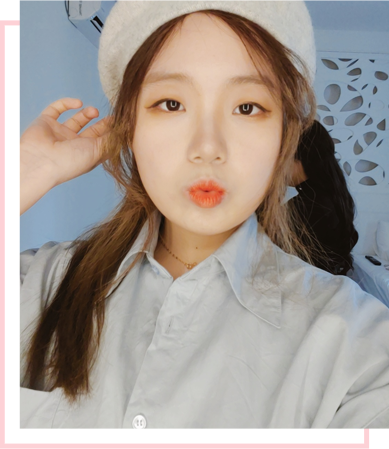

이런 인재를 찾고계신가요?
- 디자인과 코드를 다룰 수 있는 프론트엔드 개발자
- 센스 있는 아이디어와 긍정적인 마인드를 갖고 있는 사람
- 업무에 책임감을 가지고 열정적으로 일하는 사람
- 무럭무럭 성장하고 있지만 겸손한 태도를 잃지 않는 사람
- 현재에 만족하지 않고 더 진화한 내일을 만들려는 사람
바로 여기 있어요!
Click

Click

사용자에게 직관적인 UI와 편리한 기능을 제공하기 위해 연구하고 이야기 나누는 것을 좋아합니다 또, 동적인 홈페이지에 관심이 많아 CSS 또는 UI Library를 이용하여 시선을 사로잡는 홈페이지를 구현하기 위해 끊임없이 노력하고 있습니다
웹 접근성을 준수한 HTML5, CSS3, Js, jQuery, Bootstrap 등을 사용하여 디자인을 코드로 구현하고 다양한 브라우저에서도 동일한 화면이 보여지도록 웹 표준을 준수합니다
Media query를 활용한 반응형 반응형 홈페이지 개발과 PHP, Node.js, MySQL 환경에서의 실무 경험을 갖추고 있으며 Photoshop, illustrator 등의 그래픽 툴 사용에 능숙합니다
프론트엔드 개발자는 사용자에게 보여지는 화면을 코드로 구현할 뿐만 아니라 디자인과 백엔드 개발의 중간 단계에서 연결고리의 역할을 한다고 생각합니다 팀원들과의 소통을 가장 중요하게 생각하는 만큼 적극적이고 능동적인 마인드로 다양한 의견을 듣고 제 생각을 공유하며 사용자에게 더 편리하고 직관적인 화면을 보여줄 수 있도록 노력하고자 합니다
HTML & CSS
95%JAVASCRIPT
80%jQuery
85%BOOTSTRAP
75%PHOTOSHOP
95%ILLUSTRATOR
90%2014 ~ 2015
2014년 금메달, 2015년 은메달 수상
웹 디자인 및 개발 분야를 접하게 된 계기로 선수 생활을 하면서 디자인, 프론트엔드와 백엔드 개발, DB 관리 등의 홈페이지 제작에 필요한 많은 기술을 익힘
2015
2015년 충청남도 대표로 10위
대회를 준비하면서 집체교육을 통해 더 전문적인 개발 기술을 배우고 전국에 있는 실력자들과 평가전을 통해 배운 기술들을 응용하여 홈페이지 제작에 대한 기술을 익힘
2015.11 ~ 2016.10
개발자로 시작한 첫 회사
홈페이지 퍼블리싱과 프론트엔드 개발 그리고 간단한 백엔드 개발을 담당함
2017.01 ~ 2019.08
홈페이지 · 배너 · 팝업창 등의 디자인 업무
팀별로 세분화된 업무 프로세스와 전화 업무를 통해 의견 조율 및 홈페이지 유지 보수에 대한 경험을 쌓음
2020.02 ~ 2020.07
웹 퍼블리셔 전문가(HTML5/CSS3/js/jQuery) 과정 수료
실무에서 사용되는 퍼블리싱 기술을 습득하고 배운 기술을 응용하여 다양한 프로젝트를 진행함